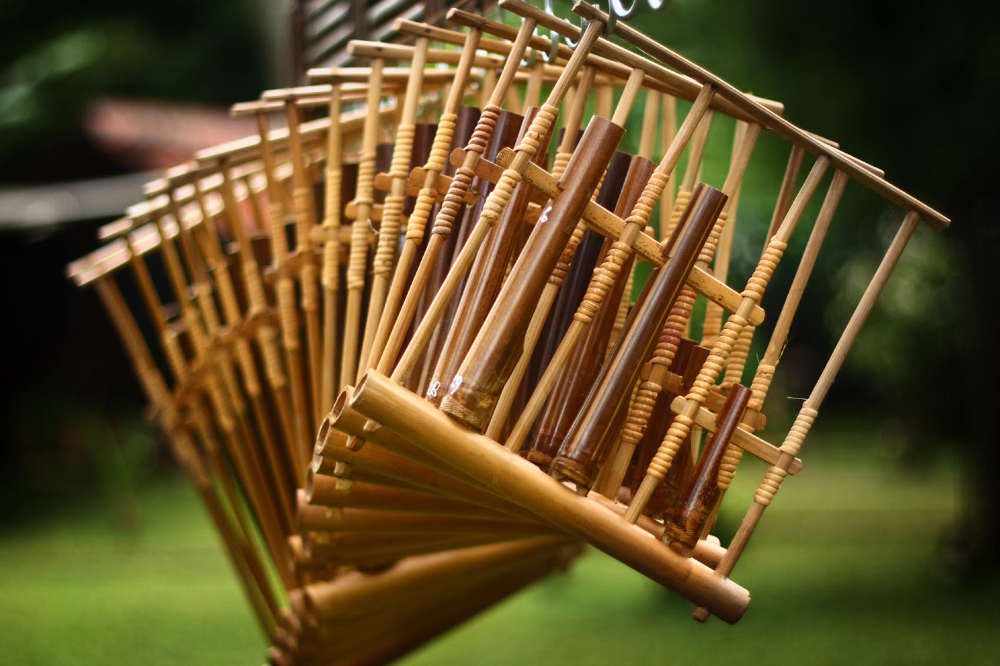
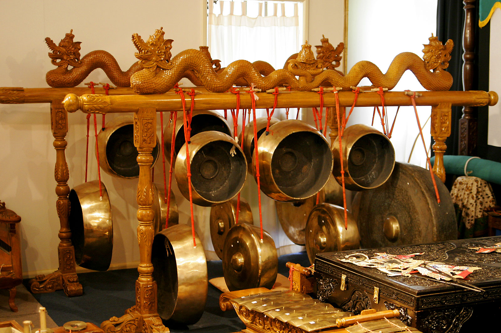
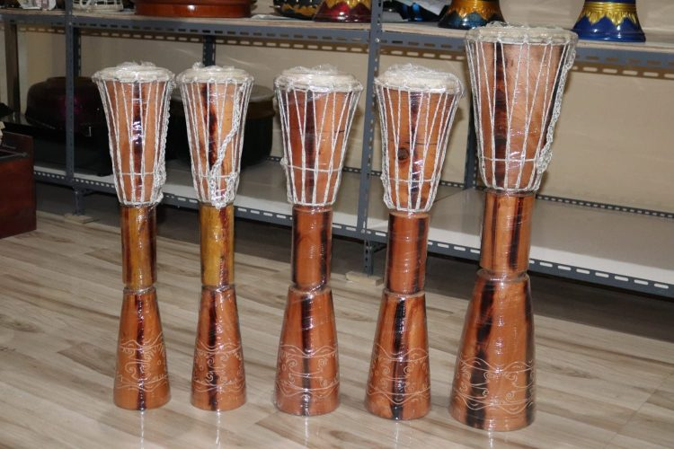
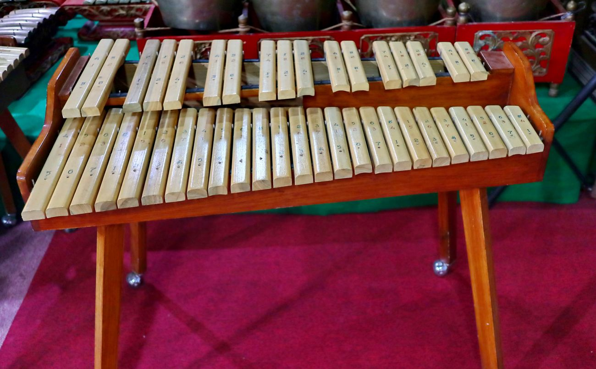

Alat Musik Tradisional
Alat musik tradisional Indonesia merupakan alat musik yang sudah turun-temurun dari generasi ke generasi dan berkembang di daerah-daerah tertentu.
Dengan begitu, hal itu menjadi bukti bahwa Indonesia memiliki aset yang beragam.
Dalam masyarakat adat, lazimnya alat musik tradisional memiliki 3 fungsi, di antaranya:
- Alat musik tradisional digunakan sebagai salah satu media atau sarana upacara adat yang memang diselenggarakan secara turun-temurun.
- Alat musik tradisional dapat berfungsi sebagai pengisi latar musik pada pertunjukan seni daerah setempat.
- Alat musik tradisional bisa menjadi sarana ekspresi, kreasi, bahkan komunikasi.
Indonesia mempunyai berbagai alat musik tradisional khas dan unik yang mana tidak akan didapati di negara lain. Hebatnya, beberapa alat musik tradisional
Indonesia telah dikenal hingga ke ranah Internasional. Apa saja alat musik itu? Berikut akan dijabarkan beberapa alat musik khas negara Indonesia yang telah menyebar dan terkenal hingga ke seluruh dunia.
Alat Musik Tradisional Indonesia yang Mendunia
Angklung
Angklung merupakan salah satu alat musik tradisional dari Jawa Barat yang telah dikenal hingga ke ranah Internasional. Angklung adalah alat musik yang terbuat dari belahan bambu yang dirangkai dan disusun sehingga apabila digoyangkan akan menciptakan nada yang khas.
Gamelan
Gamelan adalah perpaduan dari beberapa alat musik tradisional Indonesia yang dimainkan bersamaan, terdiri dari gong, gambang, saron, kenong, dan beberapa alat musik lainnya.
Tifa
Alat musik tradisional Tifa berasal dari Maluku dan Papua, bentuknya mirip tabung yang dimainkannya dengan dipukul. Lazimnya, tifa dimainkan saat upacara adat, mengiringi tarian tradisional khas Indonesia, serta pertunjukan musik tradisional. Berdasarkan jenisnya, tifa terbagi menjadi tifa jekir, dasar, bas, dan potong.
Sasando

Sejak abad ke-7, Sasando telah dipakai di Rote, tepatnya Nusa Tenggara Timur. Alat musik tradisional NTT ini, berupa kawat yang dimainkannya dengan dipetik. Sasando memiliki keunikan, yakni pada bagian utama dengan bentuk tabung panjang dari belahan bambu. Keunikan tersebut mengantarkan sasando menjadi alat musik tradisional Indonesia yang mendapatkan penghargaan dari The United Nations Educational, Scientific and Cultural Organization (UNESCO).
Kolintang
Kolintang adalah alat musik tradisional dari Sulawesi Utara yang biasanya difungsikan untuk mengiringi upacara adat penghormatan arwah leluhur. Tahun 2019, kolintang dimainkan oleh 1.223 orang hingga akhirnya berhasil memecahkan rekor dunia. Seiring berkembangnya zaman, fungsi kolintang beralih ke ranah industri kreatif, seperti menjadi pengiring lagu tradisional, pengiring tari tradisional, bahkan orkestra.